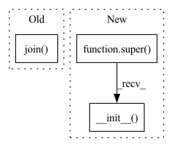

Pattern ID :38918
Before Change
"Dataset not found. You can use download=True to download it."
)
self.files = self._load_files(os.path.join( root, self.foldername) )
def _load_files(self, root: str) -> List[Dict[str, str]]:
Return the paths of the files in the dataset.After Change
collections = ["sn1_AOI_1_RIO"]
assert image in {"rgb", "8band"}
super().__init__(
root, image, collections, transforms, download, api_key, checksum
)
class SpaceNet2(SpaceNet):
rSpaceNet 2: Building Detection v2 Dataset.In pattern: SUPERPATTERN
Frequency: 4
Non-data size: 3
Instances Fragment ID: 110971208
Project Name: microsoft/torchgeo
Commit Name: 1c833d5d7ecaa379a227ca0c8136e9beef47beec
Time: 2021-09-28
Author: ash1995@gmail.com
File Name: torchgeo/datasets/spacenet.py
M Class Name: SpaceNet1
N Class Name: SpaceNet1
M Method Name: __init__(7)
N Method Name: __init__(7)
M Parent Class: SpaceNet
N Parent Class: VisionDataset
M File Name: torchgeo/datasets/spacenet.py
N File Name: torchgeo/datasets/spacenet.py
M Start Line: 84
M End Line: 98
N Start Line: 331
N End Line: 335
Before Change
for class_name, class_count in self.class_counts.items():
for i in range(1, class_count + 1):
self.fns.append(
os.path.join(
self.root, self.base_dir, class_name, f"{class_name}_{i}.tif"
)
)
self.labels.append(self.class_name_to_label_idx[class_name])
def __getitem__(self, index: int) -> Dict[str, Tensor]:After Change
self.download = download
self.checksum = checksum
self._verify()
super().__init__(
root=os.path.join(root, self.base_dir),
transforms=transforms,
loader=rasterio_loader,
)
def _check_integrity(self) -> bool:
Check integrity of dataset.
Fragment ID: 110971205
Project Name: microsoft/torchgeo
Commit Name: 2ff7d776e76ffe355891f1573df37e4d3b895ff0
Time: 2021-09-28
Author: 22203655+isaaccorley@users.noreply.github.com
File Name: torchgeo/datasets/eurosat.py
M Class Name: EuroSAT
N Class Name: EuroSAT
M Method Name: __init__(5)
N Method Name: __init__(5)
M Parent Class: VisionClassificationDataset
N Parent Class: VisionDataset
M File Name: torchgeo/datasets/eurosat.py
N File Name: torchgeo/datasets/eurosat.py
M Start Line: 102
M End Line: 126
N Start Line: 108
N End Line: 115
Before Change
for class_name, class_count in self.class_counts.items():
for i in range(0, class_count):
self.fns.append(
os.path.join(
self.root, self.base_dir, class_name, f"{class_name}{i:02d}.tif"
)
)
self.labels.append(self.class_name_to_label_idx[class_name])
def __getitem__(self, index: int) -> Dict[str, Tensor]:After Change
self.download = download
self.checksum = checksum
self._verify()
super().__init__(
root=os.path.join(root, self.base_dir),
transforms=transforms,
)
def _check_integrity(self) -> bool:
Check integrity of dataset.
Fragment ID: 110971207
Project Name: microsoft/torchgeo
Commit Name: 2ff7d776e76ffe355891f1573df37e4d3b895ff0
Time: 2021-09-28
Author: 22203655+isaaccorley@users.noreply.github.com
File Name: torchgeo/datasets/ucmerced.py
M Class Name: UCMerced
N Class Name: UCMerced
M Method Name: __init__(5)
N Method Name: __init__(5)
M Parent Class: VisionClassificationDataset
N Parent Class: VisionDataset
M File Name: torchgeo/datasets/ucmerced.py
N File Name: torchgeo/datasets/ucmerced.py
M Start Line: 113
M End Line: 137
N Start Line: 106
N End Line: 112
Before Change
// Create an R-tree to index the dataset
self.index = Index(interleaved=False, properties=Property(dimension=3))
filename = os.path.join( self.root, self.filename)
with rasterio.open(filename) as src:
with rasterio.open(filename) as src:
with WarpedVRT(src, crs=self.crs) as vrt:
minx, miny, maxx, maxy = vrt.boundsAfter Change
+ "You can use download=True to download it"
)
super().__init__( root, crs, transforms)
def _check_integrity(self) -> bool:
Check integrity of dataset.
Fragment ID: 110971206
Project Name: microsoft/torchgeo
Commit Name: 9af70d3c40e20cbb6f178ea399e8d1ea5ce93050
Time: 2021-08-06
Author: ajstewart426@gmail.com
File Name: torchgeo/datasets/chesapeake.py
M Class Name: Chesapeake
N Class Name: Chesapeake
M Method Name: __init__(6)
N Method Name: __init__(6)
M Parent Class: RasterDataset,abc.ABC
N Parent Class: GeoDataset,abc.ABC
M File Name: torchgeo/datasets/chesapeake.py
N File Name: torchgeo/datasets/chesapeake.py
M Start Line: 122
M End Line: 161
N Start Line: 71
N End Line: 102